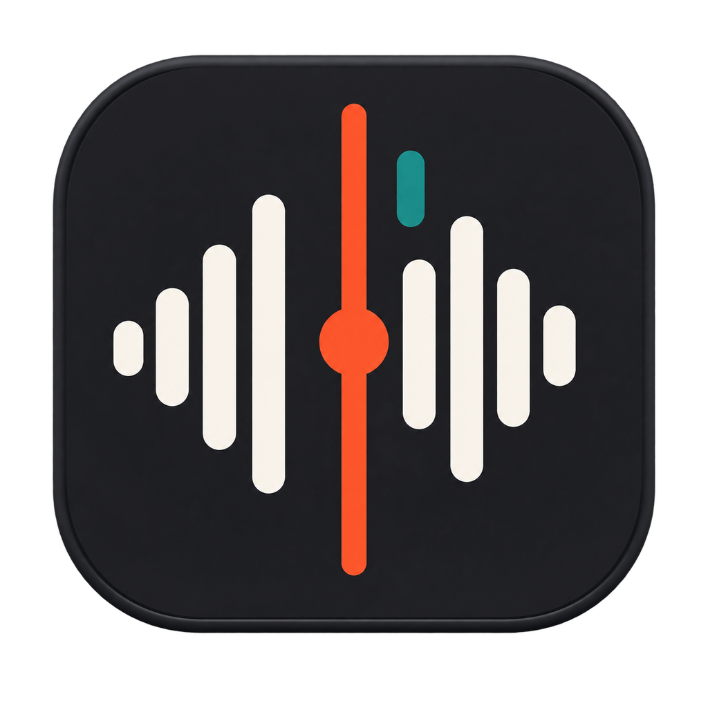
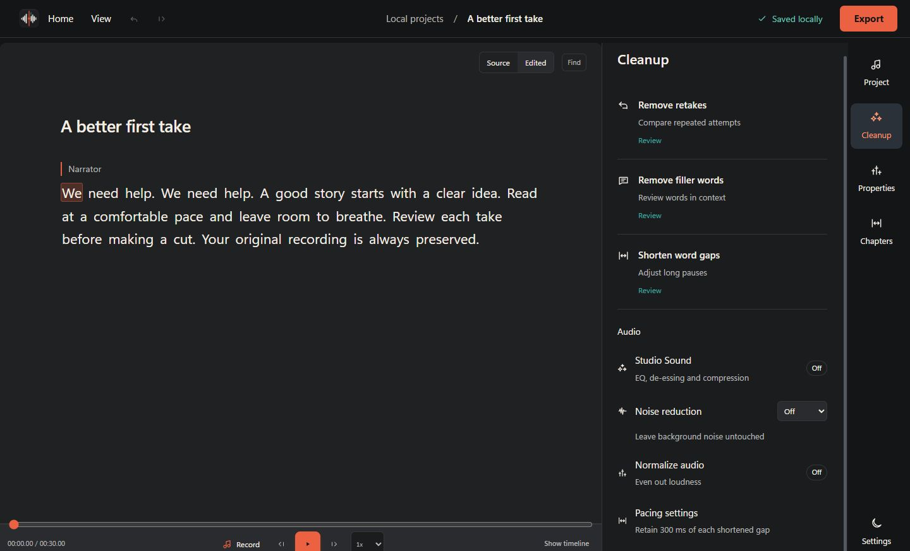

Record naturally
Set your mic levels and pause or resume anytime. Keep your takes until you choose one.
FREE · LOCAL · OPEN SOURCE
Turn a recording into an editable transcript.
Review retakes, tighten pauses, and export a cleaner take. Your files stay on your device.

See release notes for the latest packaged features. Installers may trail the latest source.

Set your mic levels and pause or resume anytime. Keep your takes until you choose one.
Preview retakes and compare attempts before cutting. Restore changes when you need to.
Export WAV, MP3, transcript text, EDL, or Final Cut XML. Your audio stays on your computer.
Free and open source under the MIT License.
Keep the copyright and license notice with copies.
MIT License Copyright (c) 2026 ArtMoreno Permission is hereby granted, free of charge, to any person obtaining a copy of this software and associated documentation files (the "Software"), to deal in the Software without restriction, including without limitation the rights to use, copy, modify, merge, publish, distribute, sublicense, and/or sell copies of the Software, and to permit persons to whom the Software is furnished to do so, subject to the following conditions: The above copyright notice and this permission notice shall be included in all copies or substantial portions of the Software. THE SOFTWARE IS PROVIDED "AS IS", WITHOUT WARRANTY OF ANY KIND, EXPRESS OR IMPLIED, INCLUDING BUT NOT LIMITED TO THE WARRANTIES OF MERCHANTABILITY, FITNESS FOR A PARTICULAR PURPOSE AND NONINFRINGEMENT. IN NO EVENT SHALL THE AUTHORS OR COPYRIGHT HOLDERS BE LIABLE FOR ANY CLAIM, DAMAGES OR OTHER LIABILITY, WHETHER IN AN ACTION OF CONTRACT, TORT OR OTHERWISE, ARISING FROM, OUT OF OR IN CONNECTION WITH THE SOFTWARE OR THE USE OR OTHER DEALINGS IN THE SOFTWARE.